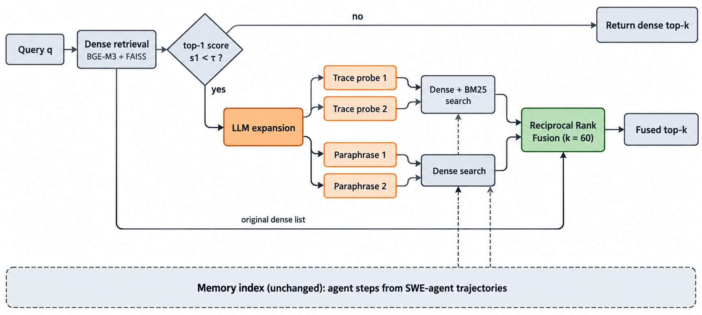
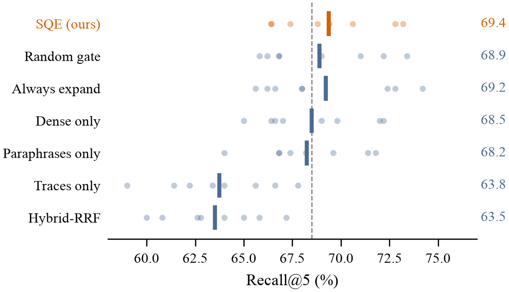
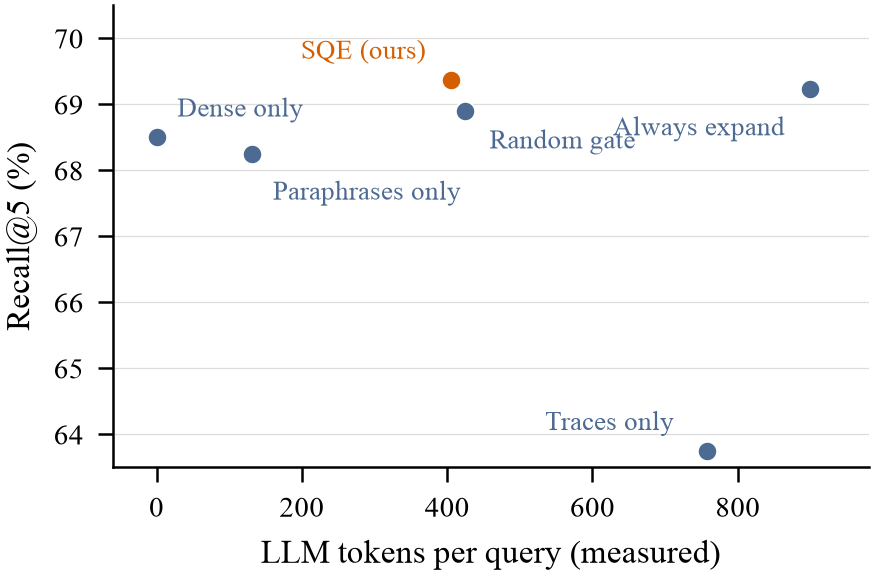
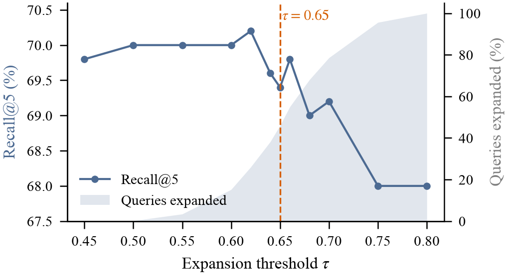
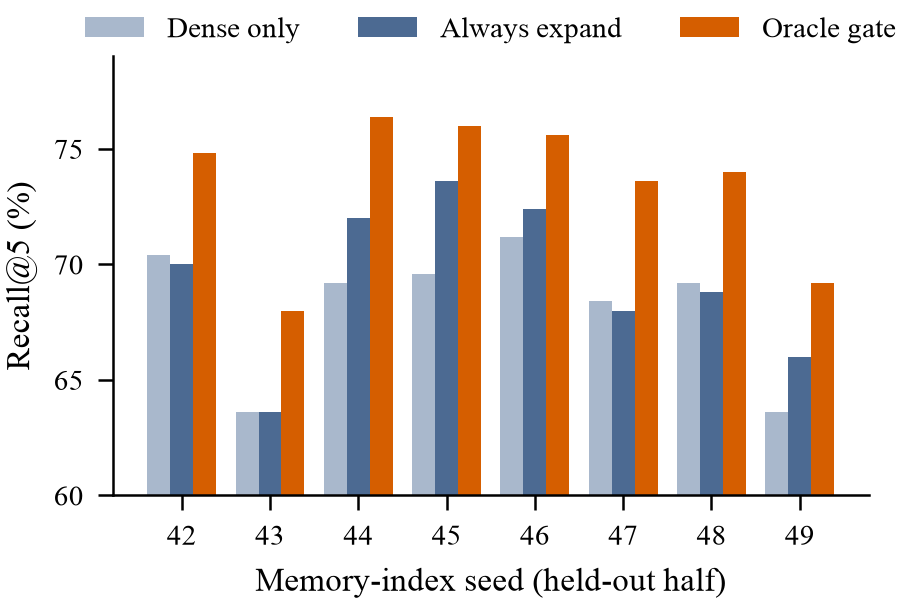

When Does Query Expansion
Help Agent Memory?
A Multi-Seed Study of Selective Expansion and Gate Reliability
Preprint 2026 · Earlier version presented at NAFSIK 2026Salomon Diei
School of Computer Science and Engineering, KOREATECH
The talk in one minute
Problem
Agents store execution traces but later search them with natural-language questions. The memory exists, but the query does not look like it.
Idea
Expand the query with hypothetical traces and paraphrases, but only when the first retrieval looks uncertain.
Result
Selective expansion halves the cost of always expanding with no loss in Recall@5. But the confidence gate is no better than random.
Why agent memory retrieval fails
What is stored
- Terminal outputs and tracebacks
- Test failures
- Patch diffs and commands
- Single agent steps: thought, action, observation
What is asked later
- Natural-language questions
- "How did I fix the off-by-one line number bug?"
- Short reminders and issue summaries
The memory may be present, but the query and the memory are written in different “languages”.
The question
Can a cheap confidence signal decide which agent-memory queries are worth expanding?
How SQE works

Dense retrieval first. If the top-1 score is below τ = 0.65, generate 2 hypothetical traces (dense + BM25) and 2 paraphrases (dense), then fuse all lists with RRF (k = 60). The memory store and indices never change.
Evaluation design
agent steps per memory store
queries per seed
resampled stores, indices rebuilt
queries in total
Data and models
SWE-smith agent steps (tool split). bge-m3 + FAISS for dense, BM25 for sparse, Qwen3.6-35B-A3B for expansion.
The key control
A random gate runs the identical expansion code at a matched rate. It separates expanding some queries from choosing which ones.
Main result: a small Recall@5 gain
SQE
Dense-Only
Always-Expand
Random gate
Mean Recall@5 over 8 seeds. SQE is slightly better than dense retrieval at Recall@5 (+0.9 points), but worse at Recall@1 (44.5% vs 45.5%). It recovers 140 targets dense retrieval missed and loses 105 it found.
Seed variance dominates every effect

points of seed-to-seed spread: three times larger than the method effect.
The gate does not beat a random gate
vs Dense-Only
95% CI [+0.1, +1.7]
vs Random gate
95% CI [−0.2, +1.1]. Not significant.
vs Always-Expand
95% CI [−0.4, +0.7]
Expanding about half the queries recovers essentially all of the benefit of expanding every query, but which half matters little.
Selectivity is still a large cost saving

LLM tokens vs Always-Expand: 405 vs 899 tokens and 2.8 s vs 5.4 s per query, at equal Recall@5.
But the random gate sits at the same point.
Why the gate fails
Hard, not fixable
Expanded queries reach 61.7% Recall@5 vs 75.9% for the rest. The gate finds hard queries, but expansion does not repair them.
Threshold barely matters
Recall@5 moves within a 2.2-point band while the expansion rate goes from 0% to 100%.
Little headroom
Expansion helps 5.3% of queries and hurts 4.2%. Even an oracle gate gains only about 5 points.
The evidence behind the gate result

Threshold sweep (seed 42)

Held-out oracle headroom
What the evidence supports
Supported
- SQE is a retrieval-time method; memory writing is unchanged.
- It matches Always-Expand at about half the tokens.
- It gives a small Recall@5 gain over dense retrieval.
- The top-1-score gate is not better than random.
Not claimed
- No downstream agent Pass@1 result.
- No human-validated query quality (audit packet prepared, unlabeled).
- Intervals pool overlapping seeds, so they are descriptive.
- One embedder, one generator, one trace source.
Next steps
Learned gates against random-budget controls
Predicting which queries expansion will fix is the open problem.
Downstream agent success
Measure whether retrieved memories change Pass@1 on SWE-bench-style tasks.
Human-audited queries
Label the prepared 100-query audit packet.
Confirmatory statistics
Pre-register one contrast and use seed- or task-clustered inference.
Thank you
Confidence gating, not expansion itself, is the open problem.
Paper and project page: salomondiei08.github.io/sqe-experiment
Salomon Diei · salomon@koreatech.ac.kr